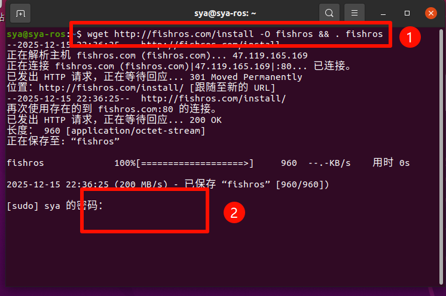
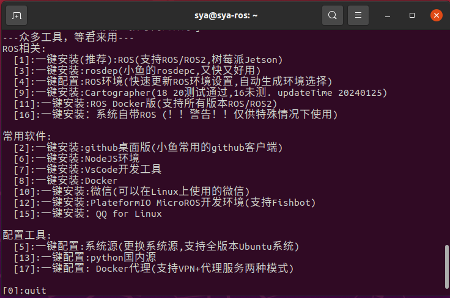
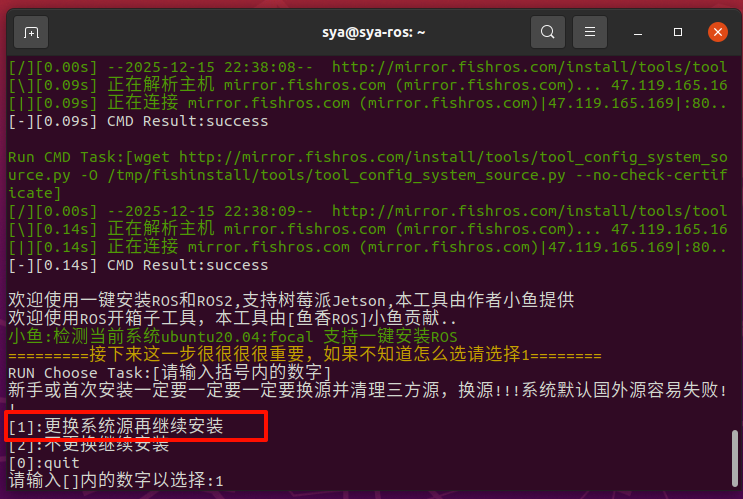
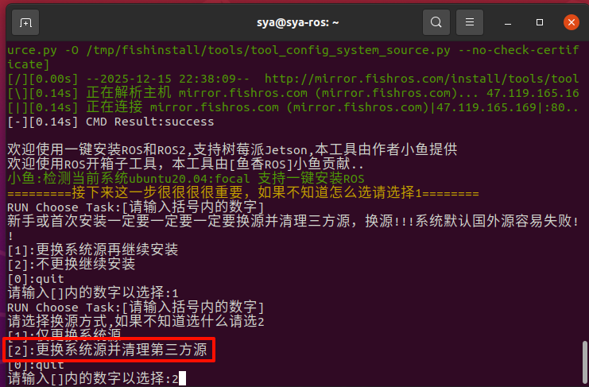
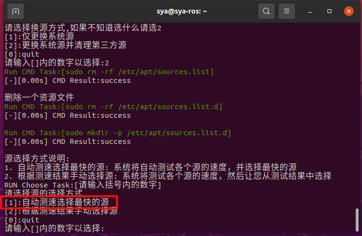
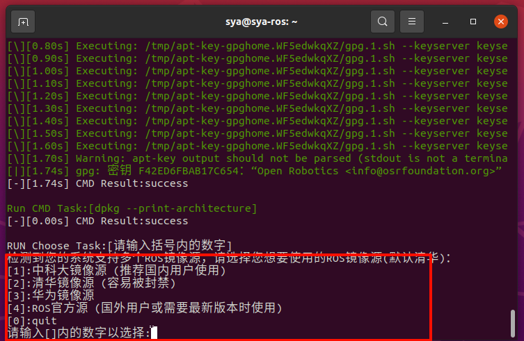
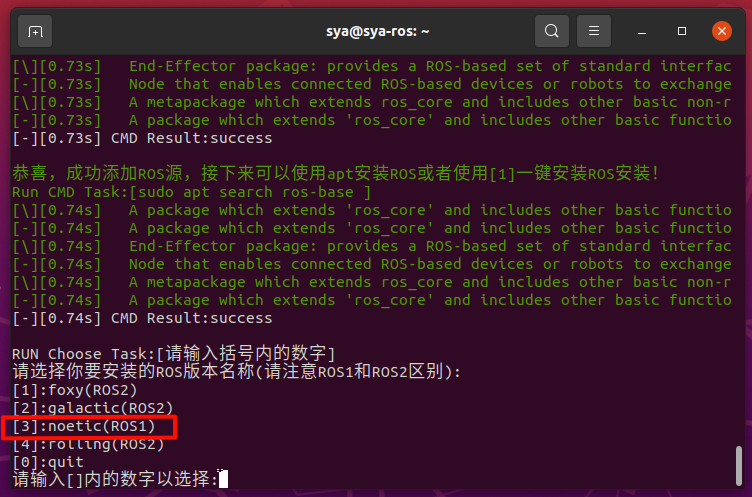
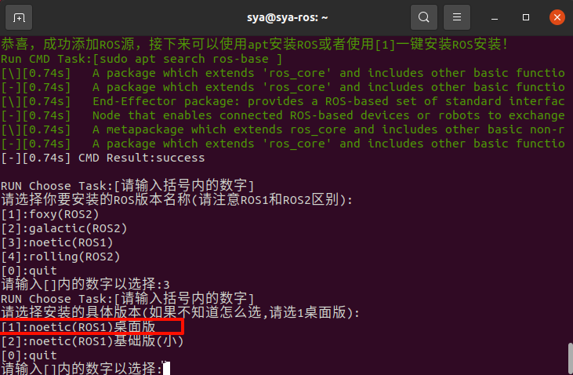
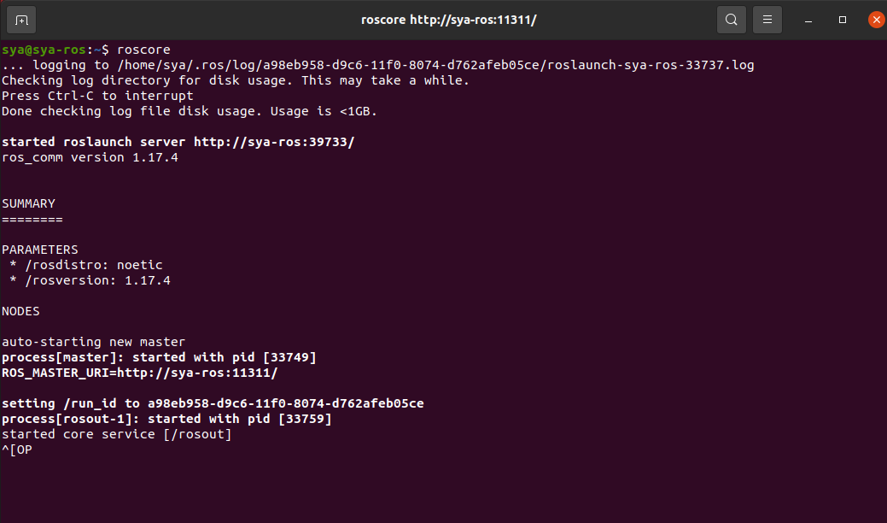

2.3 ROS安装
特别感谢 ♥ 鱼香ROS ♥提供的一键安装指令，可大幅缩减安装流程时间！！！
本课程采用 FishROS 一键安装工具，是因为：
- 自动处理国内软件源问题
- 自动匹配 ROS1 Noetic 与 Ubuntu 20.04
- 安装成功率高，适合教学环境
==补充：==
有同学反应这个地方没办法虚拟机与主机复制粘贴
以下是解决方案
载旧版本的open-vm-tools
sudo apt-get autoremove open-vm-tools
更新软件源
sudo apt-get update
安装
sudo apt-get install open-vm-tools
安装open-vm-tools桌面组件，这个可以共享剪切板
sudo apt-get install open-vm-tools-desktop
打开终端，输入以下代码：
wget http://fishros.com/install -O fishros && . fishros
输入密码略作等待

这里我们选择1

选择1.更换系统源再继续安装 ，ps：系统源为.....

选择2.更换系统源并清理第三方源

选择1:自动测速选择最快的源

大概等待1分钟....
这个根据需求即可

选择[3]:noetic(ROS1)版本

选择[1]:noetic(ROS1)桌面版

等待安装即可，过程大概为15-20分钟
安装完成后打开一个新的终端，输入
roscore
如下即ROS1 noetic安装成功

roscore 用于启动 ROS Master，是所有 ROS 节点通信的基础